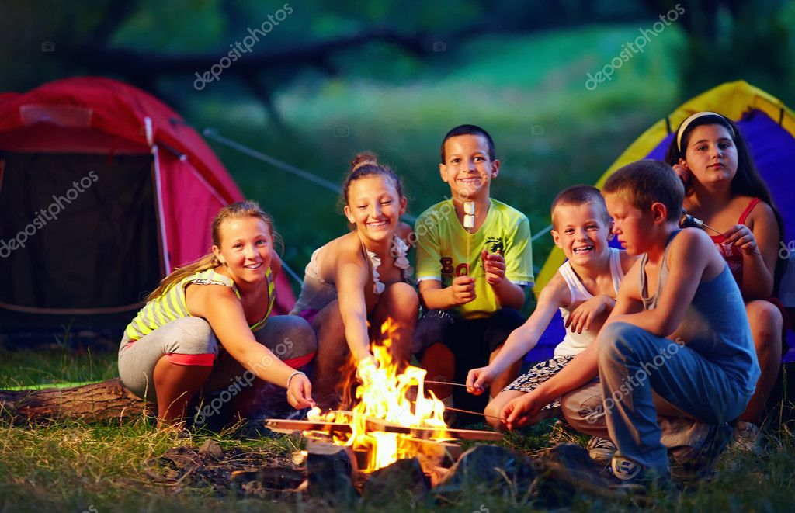
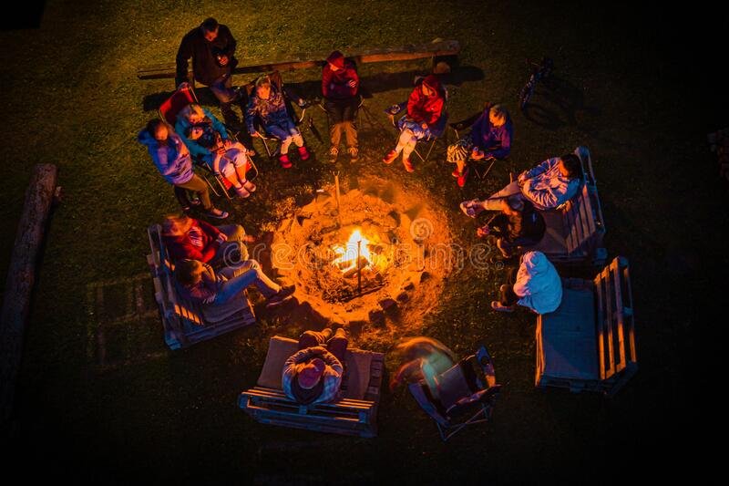
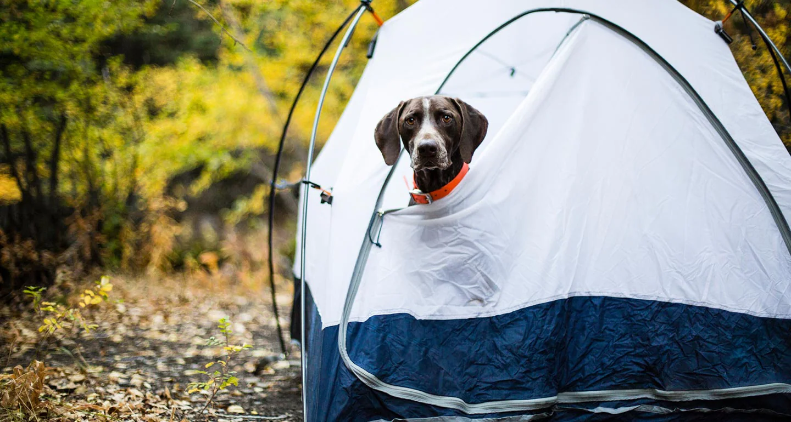

Camping is a wonderful opportunity to get away from a busy life full of traffic, crowds, screens and endless input.
Take a sky full of stars, the smell of a campfire burning, hot dogs on sticks, and add some s'mores -- now it's time to relax.
But an unruly neighbor who talks too loudly, cranks up his or her music and allows the kids or pets to run wild will ruin a relaxing afternoon for everyone in the campground.
Some people seem to forget that they're not alone in the campground and that makes other campers uncomfortable.
Having fun and being a good neighbor can go hand-in-hand in a campground, as long as people follow these basic campground etiquette rules.
All campers, whether they're traveling in a 40-foot motor coach or riding a motorcycle and staying in a pup tent, have to respect nature. That doesn't mean simply enjoying the beautiful views. It's also about being mindful of the impact visiting has on these places. Never interact with wildlife, don't dig up any plants or trees and never cut down any live trees for firewood. Mind every step that's taken and avoid damaging precious habitats.
Many of the people who choose to stay in a campground are looking for some peace, quiet and solitude. While a friendly neighbor is nice, just keep in mind that some people aren't looking for new best friends.
Some campgrounds provide showers, toilets, changing rooms and sinks so that campers can stay clean. What most campers don't realize is that a real person cleans those areas every day.
Dropping trash on the floor, leaving the sink messy and forgetting to flush are simply rude behaviors. Treat every campground facility like it's a personal space at home and clean up after each use.
Campsites are incredibly close and every sound that a person makes, from a sneeze to hollering at the kids, can be heard next door. Being outside doesn't have to mean being loud. It's best to maintain the same speaking volume at camp as would be appropriate at a restaurant, or other public place. This is especially important during quiet time hours and when campers are sleeping.
Campgrounds are a great place for kids to make friends, run and play. But parents should keep a close eye on the children to make sure they're safe and not disturbing other campers.
Tent walls are super thin and camper walls aren't much more insulated. That means everyone can hear everything. Some people are OK with swearing, but it might be offensive to others, especially if you're camping in a family-friendly area.
A thoughtful camper will keep his or her conversations private and avoid rough language, especially around children. A little personal censorship goes a long way toward creating a pleasant environment.
There's nothing quite like some good music creating a backdrop for an awesome camping weekend. It's tempting to crank it up and let loose, but if there are other people around, take that into consideration.
But that's not to say you have to sit in silence. Just watch your volume so that you're not disturbing others.
Pets are welcome at some campgrounds, but it's essential that their human companions are considerate neighbors. That means keeping the dog on a leash, never leaving the pet in a campsite alone, and making sure that barking isn't an issue. Responsible pet owners also make sure to clean up after their pet, even if the campground is remote.
Campers sometimes like to hang strings of lights, often with whimsical shapes, around the awning of their rig. It's a fun way to add some light when it gets dark out. LED rope lights and flashing lights, on the other hand, are simply decorations. The problem is that those lights don't just illuminate one campsite, the light also negatively affects other campers. People camp so they can see the stars. Save the bright lights for the city.
Camping is supposed to be about enjoying nature's sounds, sights and smells. Running vehicles, air conditioners and generators are not natural sounds, and they can produce fumes that nobody wants to breathe. Whenever possible, avoid running noisy motors that disturb the natural peace that other campers have come to the forest to enjoy.
Everyone gathers around the campfire to roast hot dogs and marshmallows, and to share the day's tales.

A few tiki torches around the perimeter of camp keep the darkness at bay. Common sense rules the day when it comes to fires. Only use designated fire rings or pits, build a reasonably sized fire, make sure that tree branches, weeds and any dry materials are out of reach of the flames. Never leave a fire unattended and always completely extinguish every fire when finished by pouring water on the coals.
And when it comes to collection, there are usually plenty of places near campgrounds to buy pre-split firewood for camp. That's a good start, but those firewood bundles are usually hardwood and it's difficult to get them to burn. A tinder bundle and plenty of kindling will do the trick. This is something that a camper can find for free by wandering around the campground picking up small, dry sticks, branches, and wood chunks. A reusable shopping bag with a sturdy handle is a good stick collecting bag and it will hold enough to get a fire started. Kids love to help, so give them a bag and send them out, too, and in no time at all there will be plenty of firewood available.
Camping, either in a tent or in a camper, requires some good organizational skills. Everything that's needed for the duration of the stay has to be packed and carried to the site. Then, it's all got to come out again so that meals and snacks can be prepared. Keeping everything in order means taking along plenty of plastic totes, little baggies and storage containers to hold everything.
Being a good neighbor in a campground means staying within the bounds of the designated campsite. It also means paying attention to the way that the tent, camper, picnic table and other items are placed next door. Make sure to arrange things so that they're not impeding on the neighboring site, but don't overcrowd, either.
There has to be some room for people to move about, cook and clean up. Only bring out the items that are necessary and leave other things in the car until they're needed.
The golden rule of camping is to leave the campsite better than it was. Clearing out old brush and plant debris and raking a spot for the tent are great ways to improve a campsite and it also deters insects and critters. Unfortunately, not everyone cleans up after themselves and sometimes campers have to pick up trash left behind by others. Campers should always place their trash in a designated can, or pack it out if there is no bin. There's truly no excuse for leaving waste and garbage out in the woods, on a campsite or in a fire ring.
There are a variety of campground types that cater to specific kinds of people and equipment. For example, some campgrounds are for RVs only, while others allow a mix of RVs, travel trailers, pop-up campers and tents. The right campground for a family or group depends on the type of equipment, but also the experience level of the group, how long they'll be staying, and how they intend to enjoy the camping experience. A lone camper or quiet couple might be more comfortable in a small campsite next to a lake, or a dispersed camp in the middle of the forest, but a family might like a full-service family campground.
Sometimes, it's just nice to sit back, listen to the birds singing, sip on a cool beverage and just forget about the world.
Camping is the ultimate getaway, as long as it's done right. Following the suggestions above, campers will likely find that their campground experience is more relaxed, happy and pleasant. In turn, they'll help provide a better camping experience for their fellow campers and everyone will have a great time.